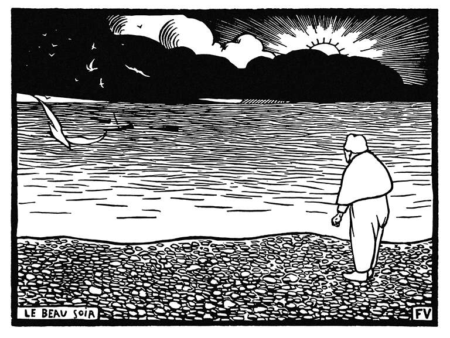

图书馆
电子文学 » 从互动小说到诞生于社交媒体的故事，电子文学领域广阔而多元。
阅读日记
2021 » 15/25 本（没达到目标，但也不算差）
2022 » 22/25 本（有进步！读书俱乐部确实帮了大忙）
2023 » 超额完成 25 本目标！！
2024 » 22/25 本（发现了几本新的最爱）
2025 » 今年的阅读记录（阅读速度很慢的一年）
读书俱乐部
2026 » 这一年我们一起读什么

电子文学 » 从互动小说到诞生于社交媒体的故事，电子文学领域广阔而多元。
2021 » 15/25 本（没达到目标，但也不算差）
2022 » 22/25 本（有进步！读书俱乐部确实帮了大忙）
2023 » 超额完成 25 本目标！！
2024 » 22/25 本（发现了几本新的最爱）
2025 » 今年的阅读记录（阅读速度很慢的一年）
2026 » 这一年我们一起读什么